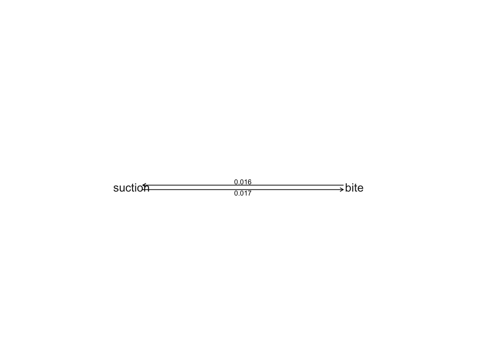
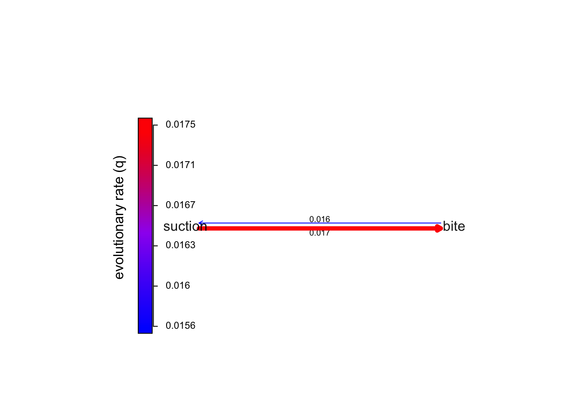
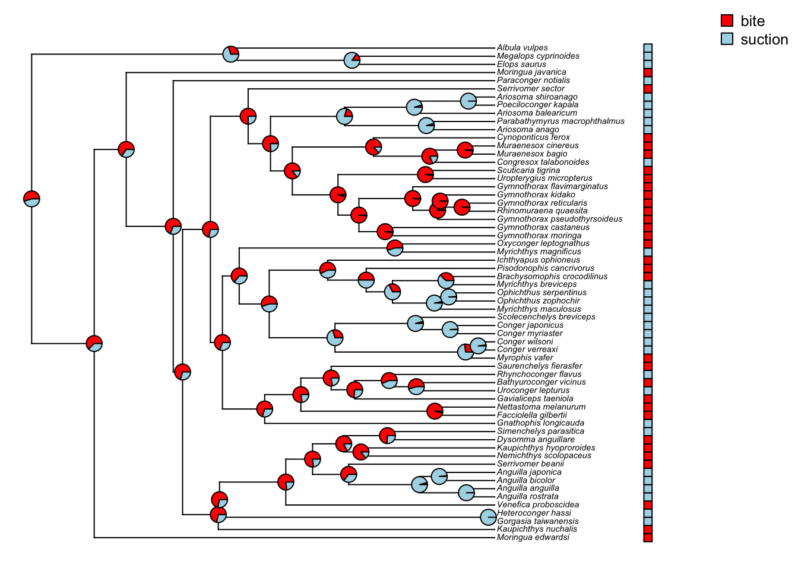
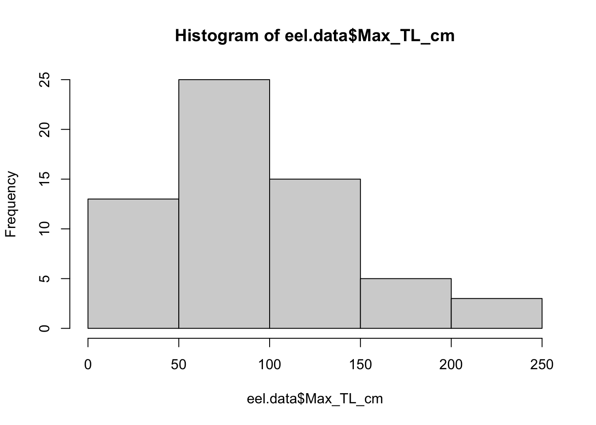
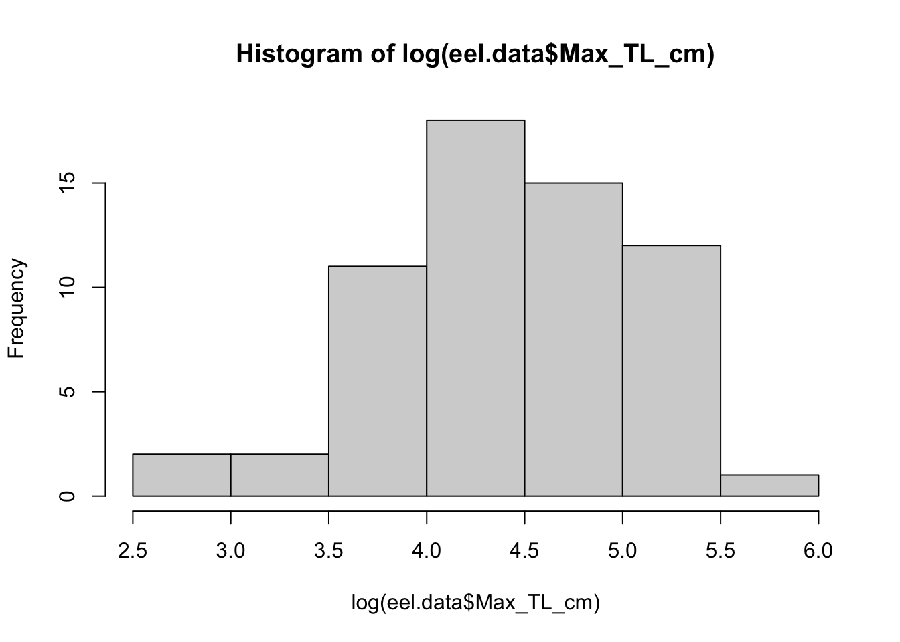
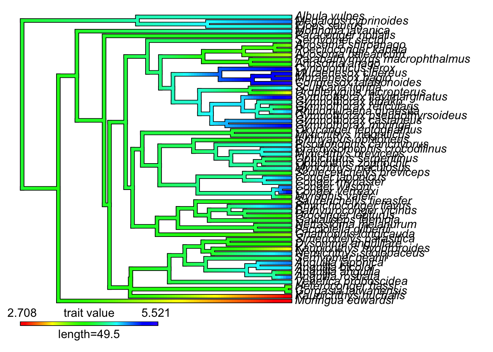

Chapter 19 Model Selection of Character Evolution
In the previous chapter, we’ve explored ancestral state reconstruction for continuous and discrete characters, and we discovered that the validity of the reconstructed states rely on credible models of character evolution. In this lab, we will compare the likelihood of different models given the data (i.e., the phylogeny and the characters), choose the best model, and then estimate the ancestral states.
19.2 Discrete traits model fitting
We’d like to first fit the evolutionary model of discrete traits by testing which transition matrix Q fits the data the best. The example file comes from fhenotypic data for feeding mode for 61 eel species. Source: Collar et al. (2014).
eel.data<-read.csv("http://www.phytools.org/Rbook/8/elopomorph.csv",row.names=1)
eel.tree<-read.tree("http://www.phytools.org/Rbook/8/elopomorph.tre")Let’s inspect the data and extract the feeding mode column, and convert it into a factor vector.
head(eel.data)## feed_mode Max_TL_cm
## Albula_vulpes suction 104
## Anguilla_anguilla suction 50
## Anguilla_bicolor suction 120
## Anguilla_japonica suction 150
## Anguilla_rostrata suction 152
## Ariosoma_anago suction 60## extract feeding mode as a vector with species name associated with each character
feed.mode <- setNames(eel.data$feed_mode, rownames(eel.data))
## convert to a factor
feed.mode<-as.factor(feed.mode)
feed.mode[1:10]## Albula_vulpes Anguilla_anguilla
## suction suction
## Anguilla_bicolor Anguilla_japonica
## suction suction
## Anguilla_rostrata Ariosoma_anago
## suction suction
## Ariosoma_balearicum Ariosoma_shiroanago
## suction suction
## Bathyuroconger_vicinus Brachysomophis_crocodilinus
## bite bite
## Levels: bite suction## "bite is trait 1, suction is trait 2"
levels(feed.mode)## [1] "bite" "suction"19.2.1 Choosing a character model
For a two-state character, there are four possible models of Q: an equal-rates (ER) model, an all-rates-different (ARD) model, and two irreversible models – one that only allows state 1 to state 2 changes and the other that only allows state 2 to state 1 changes. We will begin by comparing which one fits the data the best.
## Fit ER model
fitER<- fitMk(eel.tree, feed.mode,model="ER")
## Fit ARD model
fitARD<- fitMk(eel.tree, feed.mode,model="ARD")
plot(fitARD)
## We can also see the color version of the transition matrix by specifying:
plot(fitARD, color=T, width=T)
## Fit bite->suction only model
BStransMat <- matrix(c(0,1,0,0),2,2,byrow=T)
fitBS<- fitMk(eel.tree, feed.mode,model=BStransMat)
## Fit suction->bite only model
SBtransMat <- matrix(c(0,0,1,0),2,2,byrow=T)
fitSB<- fitMk(eel.tree, feed.mode,model=SBtransMat)After model fitting, we would compare the models by pulling out their AIC and likelihood information:
aicVec <- c(AIC(fitER),AIC(fitARD),AIC(fitBS),AIC(fitSB))
modelSummary <- data.frame(model=c("ER","ARD","bite->suction","suction->bite"),
logL = c(logLik(fitER),logLik(fitARD),logLik(fitBS),logLik(fitSB)),
AIC = aicVec,
delta.AIC = aicVec - min(aicVec))
modelSummary## model logL AIC delta.AIC
## 1 ER -37.03307 76.06614 0.000000
## 2 ARD -37.00365 78.00730 1.941156
## 3 bite->suction -38.64057 79.28114 3.214999
## 4 suction->bite -40.50138 83.00276 6.936613The four models do not differ that much, and since ER has the best AIC, we go with the simplest model.
19.2.2 Marginal ancestral state reconstruction
For discrete traits, we mentioned in the lecture that we can either calculate joint ancestral state reconstruction or marginal ancestral state reconstruction (Pagel 1999l; Yang 2006). Marginal ancestral state reconstruction is much more popular than joint one because it is the type of reconstruction we should do fi want to make specific, probabilistic statements about the values at particular nodes of the tree.
Here we use the package corHMM (Beaulieu et al. 2020) to estimate marginal ancestral states of the internal nodes using the best supported character evolution we found in the previous section
ERMat <- matrix(c(NA,1,1,NA),2,2)
# corHMM
feedDat <- data.frame(Genus_sp = names(feed.mode), feed.mode = feed.mode)
?corHMM
eel.anc.fit <- corHMM(eel.tree, feedDat, node.states = "marginal",
rate.cat = 1, rate.mat = ERMat)## State distribution in data:
## States: 1 2
## Counts: 31 30
## Beginning thorough optimization search -- performing 0 random restarts
## Finished. Inferring ancestral states using marginal reconstruction.head(eel.anc.fit$states)## (1,R1) (2,R1)
## [1,] 0.5480196 0.4519804
## [2,] 0.6242662 0.3757338
## [3,] 0.6561270 0.3438730
## [4,] 0.6904540 0.3095460
## [5,] 0.7066905 0.2933095
## [6,] 0.7158532 0.2841468Let’s plot the estimated states for the internal nodes
colPattern <- setNames(c("red","lightblue"),levels(feed.mode))
plotTree.datamatrix(eel.tree, as.data.frame(feed.mode),
colors=list(colPattern), header=F,fsize=0.45)
# add legend
legend("topright",legend=levels(feed.mode),pch=22,pt.cex=1.5, pt.bg=colPattern,bty="n",cex=0.8)
# add marginal ancestral states
nodelabels(pie=eel.anc.fit$states,piecol=colPattern,cex=0.5) We can also generate a random evolutionary history based on the internal node reconstruction from a corHMM object:
eel.model<-eel.anc.fit$solution
eelFeedMapped <- makeSimmap(tree=eel.tree, data = feedDat, mode=eel.model,rate.cat=1,
nSim=1, nCores=1)
plotSimmap(eelFeedMapped[[1]],col=colPattern,fsize=0.45)19.2.3 More than two states
Let’s revisit the ecomorphs of anoles lizards from the previous lab. There are six different ecomorphs present in the group.
anole.ecomorph <- read.csv("http://www.phytools.org/Rbook/1/ecomorph.csv",row.names=1,
stringsAsFactors = T)
anole.tree <- read.tree("http://www.phytools.org/Rbook/1/Anolis.tre")
anoleNames <- name.check(anole.tree, anole.ecomorph)
anoleNames## $tree_not_data
## [1] "argenteolus" "argillaceus" "barbatus" "barbouri"
## [5] "bartschi" "centralis" "chamaeleonides" "christophei"
## [9] "etheridgei" "eugenegrahami" "fowleri" "guamuhaya"
## [13] "lucius" "monticola" "porcus" "pumilis"
## [17] "reconditus" "vermiculatus"
##
## $data_not_tree
## character(0)# There are taxa in tree, but not in data. We need to remove these tips
anole.tree.pruned <- drop.tip(anole.tree, anoleNames$tree_not_data)
name.check(anole.tree.pruned, anole.ecomorph)## [1] "OK"Again, we first test which model fits the best. With six states, there are a lot more than four models that we enumerated in the previous example. Here we are just going to test three, but you can test more of them.
ecomorphFactor <- setNames(anole.ecomorph$ecomorph, rownames(anole.ecomorph))
fitER<-fitMk(anole.tree.pruned, ecomorphFactor,model="ER")
## Fit symmetric rate model
fitSYM<- fitMk(anole.tree.pruned, ecomorphFactor,model="SYM")
## Fit ARD model
fitARD<- fitMk(anole.tree.pruned, ecomorphFactor,model="ARD")19.3 Exercise I
Compare the three models of ecomorph evolution in Anoles lizards: which model is best supported by AICs?
Use the best supported model and reconstruct marginal ancestral states. (Hint: always set
rate.cat=1if you think your extant tips included all the possible states of the character. If you know there are unobserved hidden states, you can increaserate.cat. If you are using the standard models, ER, SYM, ARD, you can directly supplymodel = "SYM" or model = "ER"instead of therate.mat; Otherwise, if you test other types of transition rates matrix, then you need to provide a rate indexing matrix)Plot the marginal ancestral states as pies for internal nodes on the Anoles phylogeny.
19.4 Continuous traits model fitting
For continuous traits, we are going to use fitContinuous function from the package geiger to test the fit of different evolutionary models of characters. Here we are inspecting the length data of eel species.
hist(eel.data$Max_TL_cm)
hist(log(eel.data$Max_TL_cm))
The original length data is very skewed. We therefore log-transformed the original length data as the input of model fit.
lnTL <- setNames(log(eel.data$Max_TL_cm), rownames(eel.data))19.4.1 Model selection
We then compare the fits of the brownian motion model against other ones, such as OU model or Early-burst model.
?fitContinuousRead the section of possible models and choose the ones appropriate for your system of interests for comparison. Here, let’s test BM, OU and EB.
tl_BM<-fitContinuous(eel.tree, lnTL,model="BM")
tl_OU<-fitContinuous(eel.tree, lnTL,model="OU")
tl_EB<-fitContinuous(eel.tree, lnTL,model="EB")19.4.2 Ancestral states
From the AIC comparisons, it seems that the OU model is best supported. We then estimate the ancestral states by the MCMC searches. The advantage of this function is that we can provide priors of internal nodes if we know some of the ancestral nodes from fossil records. In the function of fitContinuousMCMC, There’s no model called “OU”. We can specify “Trend” to represent BM with a directional trend or “SSP”, a type of OU in which the characters are evolving towards a single optimum.
Default number of generation is 10^6. If you’d like to have a shorter MCMC chain, you can add Ngens=1e+05 or less.
tl_OUMC<-fitContinuousMCMC(eel.tree, lnTL,model="Trend", root.prior=c(tl_OU$opt$alpha-(abs(tl_OU$opt$alpha)/10),tl_OU$opt$alpha+(abs(tl_OU$opt$alpha)/10),"uniform"), outputName = "tl_OU_mcmc.output")The model writes out two files, one with model parameters and one with estimated node states. Similar to anc.Bayes, we will get the ancestral state estimation by taking the average of the MCMC output:
mcTLlikelihood <- read.csv("tl_OU_mcmc.output_model_params.txt",sep="\t")
nodeState<- read.csv("tl_OU_mcmc.output_nodestates.txt",sep="\t")
eel.anc.est<-colMeans(nodeState[201:1001,])
names(eel.anc.est)<-as.character(1:eel.tree$Nnode+length(eel.tree$tip.label))We then use the contMap in phytools to generate an interpolated character evolution history
eel_mcmc_mapped<-contMap(eel.tree, lnTL,anc.states=eel.anc.est)
We can export this mapped phylogeny by writeNexus, which can read into various tree manipulation programs for later analyses.
?writeNexus
writeNexus(eel_mcmc_mapped$tree, file="eel_OU_mapped.nexus")19.5 Exercise II
Inspect the nodeState for the reconstructed states above, how many of the ancestral reconstructed nodes show that the ancestral eel length is longer than 80cm? (Hint: for an ancestral node x, we try to test if most of the reconstructed ancestral state (let’s say 2.5 percentile of the distribution) is longer than 80cm from the mcmc samples: quantile(nodeState[x, 201:1001], 0.025) > log(80) )